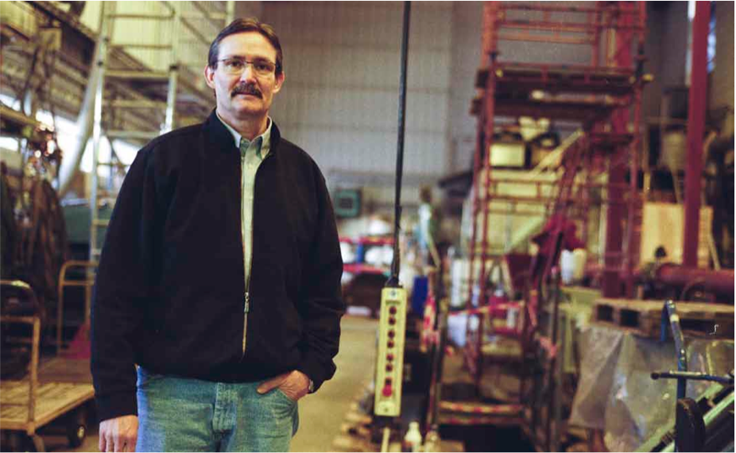

Studentene må prestere for å beholde plassen sin ved NTNU. Er det på tide å stille liknede krav til professorene?
TEKST: Hege Sjøvik
hegesjov@underdusken.no
FOTO: Eivind Sandodden Kise

VIL HA DEBATT Professor Curtis Hays Whitson har flere forslag til hvordan NTNU kan bedre undervisningskvaliteten.
Professor Curtis Hays Whitson ved Institutt for petroleumsteknologi mener man må se på muligheter for å bedre undervisningskvaliteten ved NTNU.
– Professorer ansettes på grunnlag av forskningsresultater, og ikke etter undervisningsevner, sier han.
Han savner mer kommunikasjon mellom professorer.
– Det er en uskreven regel at man ikke skal gå på andre professorers forelesninger bare for å høre på. Mye grunner nok i frykt for dårlige tilbakemeldinger, sier Whitson.
Vant til å være best Whitson mener at man bør belønne de som gjør en god jobb framfor å iverksette sanksjoner mot dårlige forelesere. Han synes det er en interessant idé å gi professorer karakterer på bakgrunn av deres undervisningsinnsats, men mener det må gjøres av noen utenfor instituttet. – Vi er vant til å være best i klassen, og som art er vi ikke glad i dårlige karakterer. Med en slik løsning vil sannsynligvis flere jobbe for å prestere bedre, sier Whitson. Prorektor for utdanning og lærings- kvalitet Berit kjeldstad ved NTNU tror det blir vanskelig å sette karakterer på professorene, men stiller seg åpen for nye ideer til kvalitetssikring av undervisningen. – ekstern evaluering er alltid bra, og å bruke det for å vurdere undervisningskvalitet er et interessant forslag. Vi har positive erfaringer med intern mentorveiledning, noe som virker konstruktivt heller enn dømmende, sier hun. Styrerepresentant Michael Johansen i NTNU-styret tror også at løsningen er mer ekstern tilbakemelding på undervisningen. – Å få professorene på instituttene til å vurdere hverandre blir som å be venner gi karakterer til hverandre. Enten er de ærlige og blir uvenner, eller så smører de på med venneprat, sier han. Johansen mener en løsning kunne vært en ansatt student som tidligere har tatt emnet, for eksempel en av de insti- tuttillitsvalgte i studentrådene.
Utdatert og nedprioritert Johansen mener det er et stort problem at mye av undervisningen er utdatert, og at mange av foreleserne møter ufor- beredt. Han forteller at da han tok IT-emner måtte han bruke tiden utenfor forelseningene for å lære det han trengte til han kom ut i arbeidslivet. – Jeg måtte gjøre unna øvingene for å få graden min, for deretter å bruke fritiden på å lære meg noe som framtidige arbeidsgivere faktisk kunne bruke, sier han.
Han tror det er viktig å tenke nytt når det gjelder undervisning. Alternative undervisningsformer er mer effektive, de engasjerer studentene og vil sørge for et bedre oppmøte. – Det vil koste mye, men NTNUs professorer har nedprioritert undervis- ningisåmangeåratdeterpåtideå vise at man er villig til å satse på utdan- ning med penger, og ikke bare med ord og planer, sier Johansen. kjeldstad forteller at NTNU har som mål å gi forskningsbasert utdanning på et høyt internasjonalt nivå. – Hvis det stemmer at undervis- ningen ved noen fakulteter er utdatert er dette uheldig. Skal vi heve oss inter- nasjonalt, kan ikke dette aksepteres, sier hun. Hun er uenig i at undervisningen har lav økonomisk prioritering ved NTNU. – Fakultetene har økt sine bevilg- ninger som følge av at vi har fått flere studieplasser. Dette går til undervisning, sier kjeldstad.Vi er vant til å være best i klassen, og som art er vi ikke glad i dårlige karakterer.
Curtis Hays WhitsonProfessor ved NTNU Source Title
Kan fratas arbeidsplassen I tilfeller hvor det til tross for flere tilba- kemeldinger ikke kan spores bedring, mener Johansen at det bør være mulig å si at en person ikke egner seg som foreleser. – Vedkommende bør da fratas anled- ningen til å ødelegge studiesituasjonen for et potensielt hundretalls studenter hvert semester, sier han. kjeldstad er enig i at det i noen tilfeller kan være aktuelt å vurdere om universitetet er riktig arbeidsplass. – Hvis man ikke ønsker å undervise, bør man som professor ikke være ansatt på et universitet, sier hun.